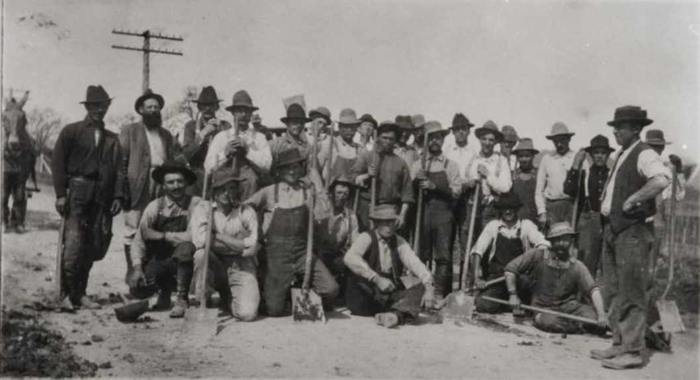
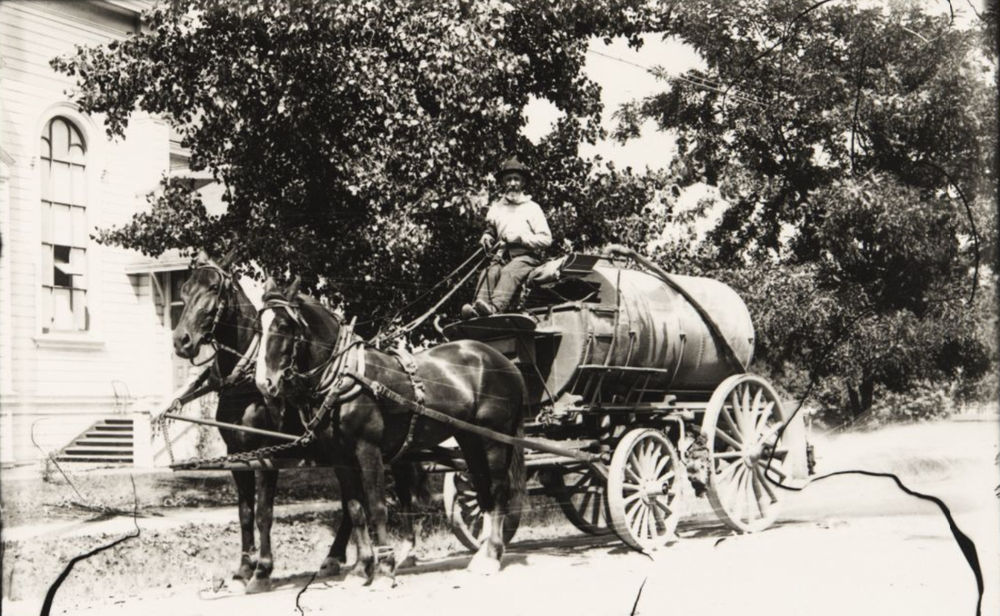
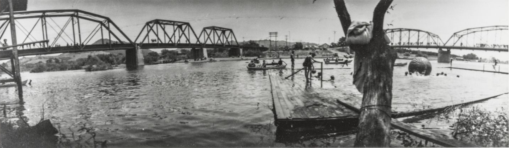
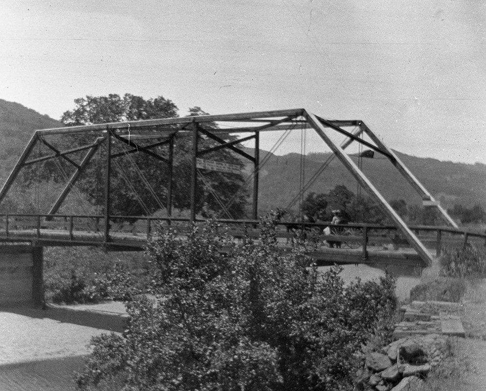
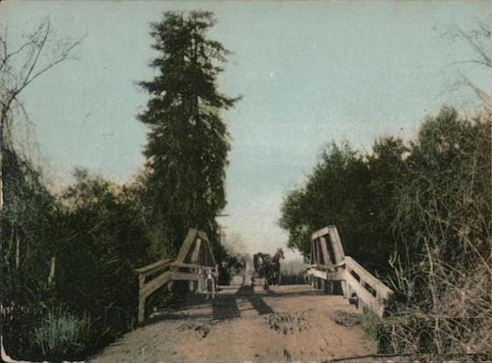
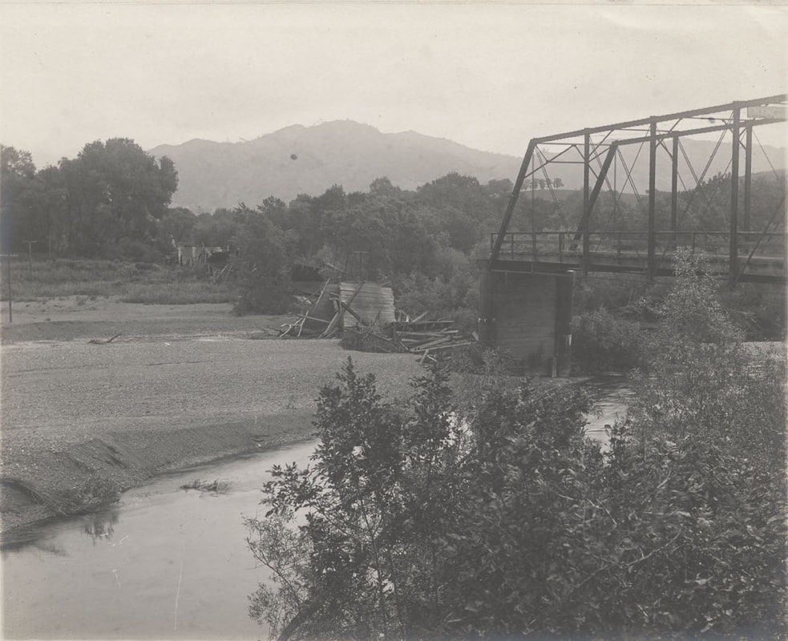
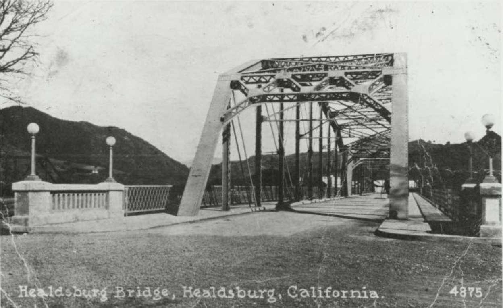

Roads, Ferries, and Bridges
© 2020 Hannah Clayborn All Rights Reserved
|
Mud and isolation. Those are key words for understanding what happened in northern Sonoma County every winter 170 years ago. As the annual rainy season set in, social life came to a squishy halt.
Imagine it: no paved roads; no bridges; not even a ferry to cross swollen creeks and a raging river. Under normal conditions most dirt trails led up to sand bars and natural fords in waterways. But in winter and spring wagon wheels and horses hooves sank deep into glue-like swamps. As each road became a sink hole or transformed itself into a dangerous running stream, it was abandoned.(1) In flood years farming families in outlying areas might be confined to their homesteads for weeks on end. Depression and occasional incidents of mischievous mayhem, murder, and suicide generally accompanied those dark, damp weeks. The early road improvements, ferries, and bridges in northern Sonoma County were not only technical achievements, they also meant commerce, recreation, and human fellowship. Until about 1915 rural road maintenance was carried out by Road Superintendents, appointed for each district by County officials. That superintendent in turn, divided his district into smaller sections and appointed certain farmers as road bosses. Receiving $4 per day for the use of their teams and wagons, or applying the same as credit on their property taxes, crews of local farmers under a road boss would haul gravel from stream beds to deposit in the middle of the roads where repairs were needed. Horses hooves were used to scatter the gravel and cover the surface. Such work usually took place in the fall after the crop harvesting. Sonoma County Supervisors tried to battle the summer dust by implementing a system of road sprinkling using large tank wagons. Along County roads shallow wells at suitable distances provided water. Such seasonal sprinkling continued until the roads were paved in concrete in the 1920s.(2)  Road crew near Windsor in 1895. (Sonoma County Library)
 Water wagon for street sprinkling on Matheson St. at Fitch St, , 1915. (Sonoma County Library)
First Ferry
According to one local historian, a Mr. Kirby established the first ferry across the Russian River about 1859, but it may have begun much earlier. An 1858 County road map clearly shows a ferry located a short distance south of the current Memorial Bridge (near the old Grant Ave. railroad stop).(3) Another ferry operation appeared at the current Memorial Beach area by the early 1860s. It was jointly owned by Thomas W. Hudson and John D. Grant.(4) Since Hudson owned the west bank of the river, and Grant owned the east bank, it was fortunate that they could cooperate. It is said they were equal partners, each owning the ferry apparatus to the middle of the stream on his own side.(5) One early resident, J. S. Williams, remembered the ferry, located at a point between the current railroad and automobile bridges. He also remembered Thomas W. Hudson, who lived in a house near the current site of south University Street. Hudson's main duty was to ferry the stage twice each way every day during most of the winter months. Williams claimed that there were not many people at that time traveling to San Francisco, but there was considerable traffic between Healdsburg and the Washoe and Feather River mines in those early years.(6) A rope cable stretching across the Russian River constituted a major portion of that ferry equipment. The west end was tied to an oak tree and the east end to a windlass (winch with a crank.) In the fall of 1867 the partners built a larger ferry and established the following rates: four horse wagon or ox team $.75 two horse team $.50 person/each $.10 cattle/each $.08 hogs/each $.05 sheep $.03 (7)  Pioneer J. S. Williams remembered that the Hudson-Grant Ferry was located between the Railroad Bridge (left) and Memorial Bridge (at right), That area is shown here in 1934. (Sonoma County Library)
Pioneer Remembers Heroic Horse
A thrilling story told by Healdsburg pioneer W. A. Maxwell illustrates what that ferry crossing might look like during a bad winter. Maxwell remembered the heavy rains of 1860–61 when he was Wells, Fargo and Company’s agent in Healdsburg. Most of the express business was done by "franking envelope", shipping coin from place to place. But this time the sizable shipment of cash and other mail could not pass by normal scow ferry. The east bank of the river and much of the Fitch ranch (near the current Bailhache Avenue) was completely underwater, so the Wells Fargo stage could not even reach the ferry. John Grant, part owner of the ferry and well known local rancher, came to the rescue. As Maxwell stood staring in amazement, Grant put a pack saddle on an old roan horse, lashing the express box to it. He then turned the animal's head toward the other bank and told him, simply, to go. The horse seemed to appreciate the situation and swam bravely over, remembered Maxwell in 1908. I took the box from him, tied on the return box and sent him back. This was repeated for three or four days until the flood abated.(8) Steamboat on the Russian River
Waterways are always the first routes in an undeveloped country. Towns established on navigable waterways and, like Petaluma in Sonoma County, are always the most prosperous early trading centers prior to good roads, bridges and railways. There was a time when some Healdsburg residents were certain that the Russian River could be made navigable. In that spirit of industrious optimism they could envision a fine wharf alongside the Hudson-Grant ferry. At least two men tried to make that vision a reality. The first, William Johnson, built a five-paddle boat and launched it on the river at Healdsburg in November, 1861. That paddle boat was eleven feet long and according to San Francisco's Daily Alta California newspaper, She moved off gracefully, amid the cheers of the crowd and the thrilling music of the Russian River Brass Band. After she had run up and down the river for several hours, exhibiting great speed and beauty and regularity of motion, the crowd dispersed, satisfied that the new wheel must undoubtedly prove a success…(9) The fate of that boat is unknown, as it never appears again in the historic record. The next heroic attempt to navigate the Russian River came in 1870. It is well and dramatically told in the following articles found in the Russian River Flag newspaper. May 13, 1869 The Steamboat Enterprise is now being built at Heald's Mill (in Guerneville) by Capt. John M. King, will be launched next Saturday the 15th. The machinery is all aboard now and the boat will be completed within two or three weeks when she will make an excursion to Duncan's Mill on the coast going down one day and returning the next. As many of our citizens will want to join the excursion...the livery stables will run stages down to the landing twelve miles from Healdsburg. Capt. King has been running a barge on the river, drawing from fourteen to twenty-six inches, according to the load. He has made six round trips from Heald's Mill...He has built another large barge drawing only twelve inches when loaded. He is now building the Enterprise to tow those barges. The boat is 50 feet long; 10 foot beam on the bottom and 14 1/2 feet on deck; Engine 15 horsepower; draught 12 inches; depth of hull 44 inches; dip of paddles (sternwheel) 10 inches. She is built in a superior manner and fitted up with a cabin and all necessary conveniences for carrying passengers. Capt. King having a contract for carrying the lumber from Healds and Guerne's Mill...In the season of high water the captain expects to run to Healdsburg. This would give us cheap freight between Healdsburg and San Francisco while the mud road to Petaluma was at its worst... August 12, 1869 The steamer Enterprise, Capt. John King, has steam up again and is running...The Capt. has constructed a dam and a lock, which gives the river a three foot rise above the dam. He will open the lock and let the boat ride through to the sea on the accumulated waters. Capt. King says that three locks would be sufficient to make the Russian River navigable to Healdsburg the whole year; also that we may expect to see his boat up here in the fall rains. December 23, 1869 The Steamer Enterprise—we are pleased to learn from Mr. J. W. Bagley that Capt. King's boat...is now successfully running on Russian River. She left Heald and Guerne's Mill...for Duncan's Mill, with barges in tow loaded with charcoal. On her next trip she will carry hoop poles and several thousand Christmas trees for San Francisco. At last, after several unsuccessful attempts, Russian River is navigated by a live steam boat, and we hope, when the river rises to see the little vessel throw out her bow-lines and stern-lines and spring-lines to the Healdsburg Wharf… Since the above was in type we are informed that the boat will leave Heald and Guerne's mill today...on a pleasure excursion to Duncan's Mill...Fare down and back $2.50. Two barges fitted up for dancing will be in tow. February 17, 1870 Mr. [Thomas W.] Hudson's bill declaring the Russian River navigable and providing for its improvement, has passed the Assembly.(10) This is intended to encourage and protect the indomitable enterprise of Capt. John M. King, who has built a steamboat to navigate Russian River, and it will no doubt become a law. It will be of great benefit to our county. March 10, 1870 Some weeks since Capt. King attempted to make a passage to Healdsburg with the Enterprise but a little above Heald and Guerne's mill the pilot backed the boat upon a snag and sank her. This occasioned delay and considerable expense, but the indomitable Captain has got her afloat again and, with the experienced help of his friend Capt. Parker of the Mare Island Navy Yard he will make the first voyage to Healdsburg as soon as some obstructions can be removed from the river, which he is now engaged in doing with a force of fifteen men. The boat is now above the mouth of Mark West Creek about ten miles below Healdsburg. The captain has bought new sixty-horse power engines for her and he will keep her here when she comes up until they are put in. May 5, 1870 We have learned with considerable regret that Capt. King's boat the Enterprise is, is for the present, a failure...At his request we publish the following letter: "...Heald and Guerne have attached my boat, but that will not prevent me from making a living as some friends have engaged me to run the Perseverance Saw-mill...thirteen miles above Cloverdale. They also attached my dog "Gipsey", which I valued more than money. They sold the dog for $200...They may break me, but they cannot keep me broke. The first of August I will commence building another steamboat at the mouth of Russian River, to be called the Perseverance. Respectfully yours, John M. King May 12 1870 A Card From Mr. Heald. Eds Flag: — If I may be permitted the space in your paper to correct some errors in the card of John M. King, in your issue of May 5th, I will be thankful for the favor, as it seems to throw the blame of the failure of his boat where it does not belong. I think, however, the fact of his trying some four weeks to get the boat to Healdsburg over the shoals, with the river falling every day, without any probability of a rise till next December, and only making twelve miles, should convince any one that the “Enterprise for the present is a failure,” and Heald and Guerne not wholly answerable tor it, if they had lately attached the boat; but the facts are, that Heald and Guerne have not attached the boat as represented by King, and, as to his dog “Gipsie,” I never as much as knew he had such a dog. Heald and Guerne do not wish to “break” J. M. King, nor to “keep him broke,” but suppose we will have the pleasure of seeing the “Perseverence” when she comes along. Thos. T. Heald. May 8th. 1870. The steamboat Enterprise had apparently moved more and more slowly up the river after she was freed from her snag 10 miles below Healdsburg. According to local historian Julius Myron Alexander, farmers had to haul the boat by horse teams until she became irrevocably grounded near the Calhoun ranch, about five miles south of Healdsburg (near Windsor River Road and Eastside Road). There she lay beached until the next fall when the "the same crew" came to re-caulk the vessel and guide her back down the river to Duncans Mills.(11) No further reference has been found to the steamship Enterprise, the proposed steamship Perseverance, or Captain John King. Local farmers resigned themselves once again to the mud road to Petaluma. Bridges
The first bridge to cross that span came with the much anticipated arrival of the San Francisco and North Pacific Railroad in the summer of 1871. Having just constructed a $23,000 Howe Truss iron bridge for their Iron Horse, the railroad company donated $5,000 for an adjacent wagon bridge. This would allow farmers on the east side of the Russian River to get their produce to the new depot on Hudson Street. The County Supervisors made up the remaining money, $11,000, and the wagon bridge was opened in the fall.(12) This first Russian River bridge at Healdsburg was made of 14" x 14" inch timbers bolted together and spiked down with three to four-foot long pieces of iron to two supporting piers sunk some 20 feet into the gravel. Although the solidity of this bridge was much heralded in the press, it was periodically swept away or damaged by winter flood waters. This was also the fate of other early wooden bridges in the area, on Dry Creek, Mill Creek, and in Alexander Valley. Newspaper reports seem to indicate that they were undergoing almost constant repair or replacement.(13) In 1893 a modified Pratt Truss bridge replaced the old wagon bridge across the Russian River. Under the direction of Doe, Hunt, and Company, 14 men spent two months in that year completing a bridge with three cement piers, each 24 feet high, 25 feet wide, and 7 feet deep. Further reinforcement was provided by iron needle beams that would make it impossible for the floor to collapse, the Healdsburg Tribune assured its readers. It was built for $22,000.(14) Anticipating heavier freight traffic with the extension of the railroad to Mendocino and Humboldt Counties, railway officials replaced the original railroad bridge with steel and concrete in late 1900.(15) Steel had become the new symbol of the industrial world by the end of the century, at the same time that America had established itself as a world power. Strong, durable, and light, steel had potential for beauty as well as function. Steel construction, much of it in bridges, came to represent the emerging might of industrial America. Ironically this powerful symbolism helped to make the steel bridge a target for political activists. In November 1919, the steel railroad bridge in Healdsburg (along with all the other steel bridges in the United States) was put under 24 hour-a-day armed guard.(16) The threat was possible sabotage by the Industrial Workers of the World, otherwise known as the I. W .W. or "Wobblies". Begun in 1905 as an anti-capitalist, anti-elitist workers’ rights group, the more radical members of the I. W. W. (branded locally as "murderers" or "Reds") seemed to single out steel bridges as a special target. Oh! The Bedclothes Are Fearful!
One by one all of the bridges in the Healdsburg area, in Alexander Valley, along Dry Creek, Mill Creek, and Felta Creek, at Lytton, and Geyserville were upgraded to iron and then to concrete and steel.(17) A young girl, Neva Board, watched one of these smaller bridges being built near her ranch home in Dry Creek in 1901. In a letter to a friend in April she described the scene: ...four weeks ago today the bridge builders came to build the big County bridge across the creek in front of our house. Four of them are from Frisco. They board and room with us. Two other men are from a town nearby, and the other two are teamsters. So you see it keeps mother and I real busy to not only cook for four hungry men but to wash and iron. Oh! the bed clothes are fearful, they are so dirty. The bridge will be finished by Thursday and oh won't we be glad, as it is so much trouble to go through fields and to open three gates to get to the County road.(18)  A wagon, likely carrying Neva Board, crosses a Dry Creek Valley bridge in 1905. (Ann Marie and Mark Adamick)
 Bridge over Mill Creek near Healdsburg in 1908
 Steel and concrete bridge over the Russian River in Alexander Valley, about six miles northeast of Healdsburg, in 1906. (Sonoma County Library)
The Automobile Bridge
In July 1921, contractor A. W. Kitchen of San Rafael began constructing a new steel and concrete truss bridge across the Russian River. This bridge acknowledged the automotive age by it design, conceived not for wagons, but specifically for car traffic.(19) When first opened in December 1921, it sported elegant light standards at both ends, and was unencumbered by the chain link fencing that has been added in recent years. This bridge and the few other remaining truss bridges in Sonoma County recall another era, when America's infrastructure was literally being forged in steel.  Automobile bridge built in 1921. (Sonoma County Library)
Endnotes
1. Democratic Standard 17 Jan. 1866 (3:1); 31 Jan. 1866 (3:1); 27 Dec. 1866 (3:1). 2. S. Duvall Bell, "Country Roads" in Russian River Recorder, Spring 1986, Issue 31, pgs.1-3. 3. Alexander, Julius M., Romance of the Russian River; Souvenir Program, June 19-21, 1931 pg. 25. Road Book, Sonoma County, Book A, Plat and Field Notes of Road from Santa Rosa to Healdsburg, 3 May, 1858 (0ffice of the County Clerk). 4. Road Book Sonoma County, Book A., map dated Oct. 21, 1861 (Office of the County Clerk). 5. Alexander, Julius Myron, Romance of the Russian River Souvenir Program, June 19, 20, 21, 1931, pg. 25. 6. Account of J.S. Williams, in Russian River Recorder, Oct. 1977, 2. 7. Democratic Standard, 3 Oct. 1867, 24 Oct. 1867; 14 Nov. 1867; 21 Dec. 1867; 28 Dec. 1867; 11 Jan 1868. 8. Healdsburg Tribune, 2 April 1908 (1:3). 9. Daily Alta California, 12 Nov. 1861. 10. Thomas W. Hudson owned extensive lands bordering the Russian River at the southern boundary of Healdsburg. An ardent Democrat, Hudson was a politically influential Sonoma County representative to the State Legislature. Local historian Julius Myron Alexander also claims Hudson and his sons were ringleaders of the local Ku Klux Klan. Declaring the river navigable would have served Hudson's interests, as he owned the west bank of the river and half of a ferry system throughout the 1860's, a natural location for a proposed Healdsburg Wharf. (for information on Hudson and KKK see Shipley, Tales of Sonoma County, pg. 90, 135). 11. Dr. William C. Shipley, Tales of Sonoma County, (Santa Rosa: Sonoma County Historical Society, 1965), pgs. 89, 90. 12. Russian River Flag, 25 May 1871; 15 June 1871; 6 July 1871; 13 July 1871; 7 Sept. 1871; 28 March 1872 (2:3). 13. Democratic Standard 27 Dec. 1866; . 14. Healdsburg Tribune, 11 Aug. 1893 (3:6); 21 Sept. 1893 (3:5); 9 Nov. 1893. 15. Healdsburg Tribune 31 May 1900 (1); 12 July 1900 (1); 16 Aug. 1900 (1); 8 Nov. 1900 (8); 15 Nov. 1900 (8). 16. Healdsburg Enterprise 15 Nov. 1919 (1:6). Tribune 20 Nov. 1919 (5:6). 17. Alexander Valley Bridge: Healdsburg Tribune 14 July 1898 (1:2); Healdsburg Enterprise 10 March 1906 (1:1). Felta Creek Bridge: Healdsburg Tribune 24 Oct. 1912 (7:5). Lambert Bridge: Healdsburg Enterprise 23 Oct. 1915 (1:1). Maacama Creek Bridge: Healdsburg Enterprise 23 Oct. 1915 (1:1). Mill Creek Bridge: Healdsburg Tribune 25 June 1891 (3:3); Sotoyome Scimitar, 13 Aug. 1920 (1:7). Bridges across town sloughs: Russian River Flag 18 Nov. 1869 (3:1), 15 April 1869 (3:2); Healdsburg Tribune 5 Oct. 1893 (3:2), 26 Oct. 1899 (1:5), 30 May 1918 (4:5). 18. Letters from Neva Board (Cozzens, Dry Creek Valley) to Clara Keithly, 20 April 1901 (Healdsburg Museum # 186-5). 19. Sotoyome Scimitar;1 July 1921 (1:1 & 2:5)), Healdsburg Enterprise 22 Dec. 1921 (1:3) |